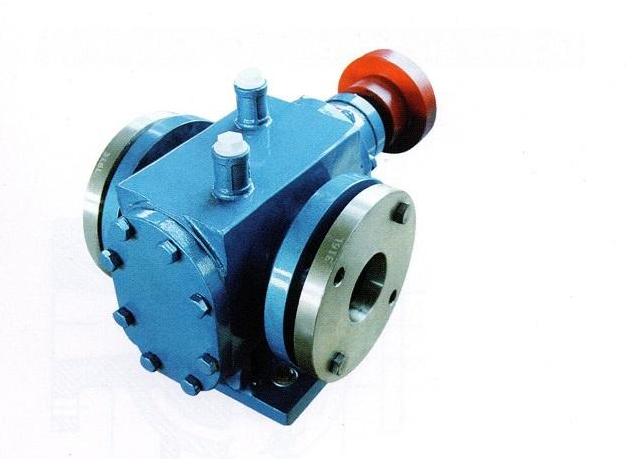
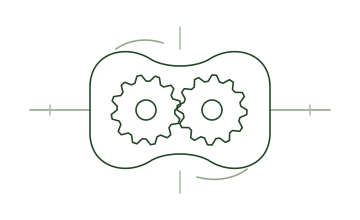
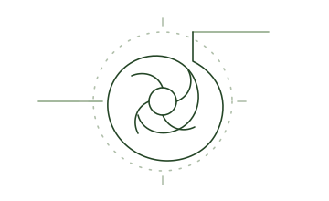
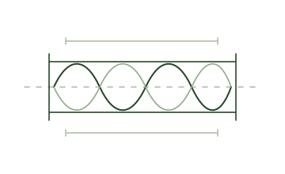
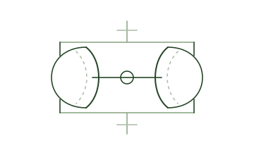
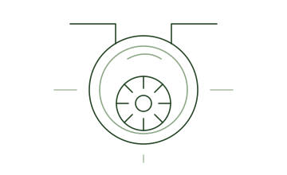
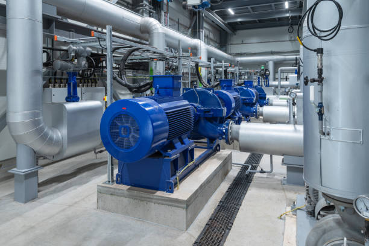
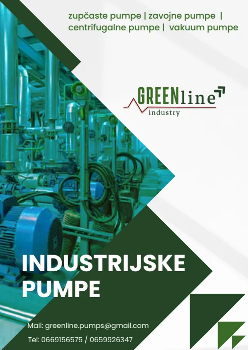

Zupčaste pumpe
ZPA tip
Toplotno izolovana zupčasta pumpa za medije više temperature.
80 m³/hMaks. kapacitet
6 barDiferencijalni pritisak
GreenLine Pumps / Industrijska rešenja
Industrijske pumpe za vodu, ulja i zahtevne medije. Pomažemo vam da izaberete opremu koja odgovara vašem procesu.
Podrška pri izboruPreporuka prema uslovima rada
Jasni tehnički podaciModeli i karakteristike na jednom mestu
Oprema sa CE oznakomDokumentacija za konkretan model na upit
01 / Rešenja iz ponude
Pet grupa proizvoda pokriva različite procese. Zupčaste i centrifugalne pumpe su u središtu ponude, a ostale grupe dopunjuju izbor za specifične medijume.
Za ulja, viskozne medijume, vodu, termalne sisteme i procese sa većim zahtevima protoka ili potiska.

Zupčaste pumpe
Zupčaste pumpe

02Centrifugalne pumpe

03
Zavojne

Membranske

Vakuum
01 / Naša ponuda
Od zupčastih do vakuum pumpi.
Pronađite seriju prema medijumu i nameni, a izbor konkretnog modela prepustite nama.
Ponuda industrijskih pumpi
Zupčaste pumpe
Toplotno izolovana zupčasta pumpa za medije više temperature.
Centrifugalne pumpe
Pouzdano rešenje za termalno ulje i toplu vodu.
Zupčaste pumpe
Zupčasta pumpa za prenos i povišenje pritiska ulja.
Centrifugalne pumpe
Višestepena centrifugalna pumpa za prenos na velike udaljenosti.
Zupčaste pumpe
Cirkularna zupčasta pumpa za čista ulja i visoke temperature.
Centrifugalne pumpe
Vertikalna višestepena pumpa koja štedi prostor.
Membranske pumpe
Plastične i metalne membranske pumpe za zahtevne fluide.
Zavojne pumpe
Mono zavojna pumpa za medije sa čvrstim česticama i vlaknima.
Vakuum pumpe
Vakuum pumpa sa vodenim prstenom za gasove i paru.
Vakuum pumpe
Kompletan sistem za skladištenje i upravljanje vakuumom.
Pokušajte sa drugim nazivom ili nam pošaljite radne parametre.
Pomoć pri izboruNiste sigurni koji model vam treba?
Pošaljite nam radne parametre.
02 / Primene
Vrsta tečnosti, temperatura, protok i pritisak određuju izbor pumpe. Krećemo od onoga što je vašem sistemu potrebno.
Pomoć pri izboruUlja, maziva, smole, lepkovi i termalni fluidi u proizvodnim procesima.
Pogledajte zupčaste pumpePrenos hladne i tople vode, cirkulacija i sistemi sa višim potiskom.
Pogledajte centrifugalne pumpeHemijski mediji i tečnosti sa čvrstim česticama ili vlaknima. Materijal pumpe biramo prema sastavu medijuma.
Pogledajte membranske pumpeTransport vode i procesnih tečnosti uz izbor kapaciteta prema potrebama vašeg sistema.
Pogledajte centrifugalne pumpe03 / Od zahteva do rešenja
Ne morate unapred znati tačan model. Pošaljite nam ono što znate o procesu, a mi ćemo pomoći da se ponuda suzi na odgovarajuće rešenje.
Vrsta tečnosti, viskoznost, čestice i hemijski sastav određuju konstrukciju i materijal pumpe.
Protok, pritisak ili potisak, temperatura i režim rada usmeravaju izbor serije i veličine.
Upoređujemo poznate parametre sa karakteristikama opreme i pripremamo razumljivu preporuku.
Nakon potvrde sledi isporuka, uz tehničku podršku i mogućnost nabavke rezervnih delova.

04 / O nama
GreenLine Pumps je porodična kompanija iz Mladenova, osnovana 2025. godine. Bavimo se distribucijom industrijskih pumpi i izborom praktičnih rešenja za firme i preduzetnike.
Oslanjamo se na znanje našeg tima i tehnička iskustva partnera. Važno nam je da dobijete pumpu za svoj proces, uz dobar odnos cene i kvaliteta.

05 / Katalog
Pregled serija, osnovnih karakteristika i primena. Preuzmite katalog ili ga prosledite kolegama.
Preuzmi katalogTehnička dokumentacija
za vaš sledeći korak.
06 / Kontakt
Već znate model ili tek definišete zahteve?
Javite nam se. Tu smo da pomognemo.